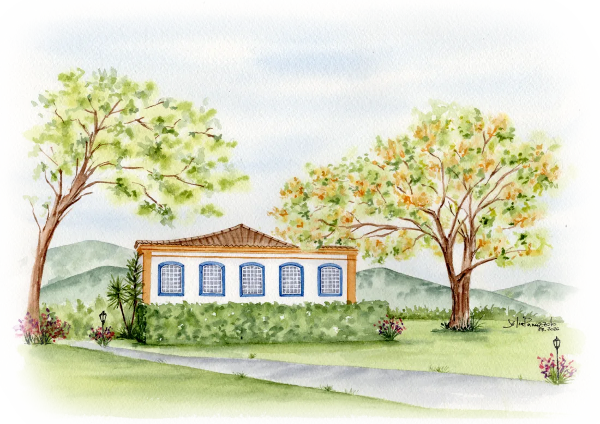

Data
Sábado
1º de maio de 2027
Vamos nos casar
01052027
Villa Casarão · Ribeirão da Ilha · Florianópolis

Sábado, 1º de maio de 2027
Com muita alegria, Nayana Rezende Vieira e João Gabriel Zago convidam você para celebrar este momento ao lado deles.
Sábado
1º de maio de 2027
14h
Chegue com 30 min de antecedência
Villa Casarão
Rod. Baldicero Filomeno, 11789
Ribeirão da Ilha · Florianópolis/SC
Esporte fino
(smart casual)
Vestidos midi ou longos, macacões, conjuntos de saia ou calça em tecidos leves. Por gentileza, evite o branco e tons muito claros, reservados à noiva.
Calça social ou de alfaiataria, camisa e, se quiser, blazer. A gravata é opcional. Sapato social, mocassim ou tênis de couro limpo.
Parte do espaço tem gramado: saltos grossos ou plataformas são mais confortáveis. Em maio é outono em Floripa e a noite costuma esfriar, então leve um casaquinho.
Sul da Ilha
A Villa Casarão fica no Ribeirão da Ilha, um bairro histórico de colonização açoriana no sul de Florianópolis, a cerca de 20–25 minutos do aeroporto.
O Aeroporto Internacional de Florianópolis (FLN) fica no sul da Ilha, a poucos quilômetros do Ribeirão. Como 1º de maio é feriado, as passagens tendem a subir: vale comprar com antecedência.
Alugar um carro é a forma mais prática de se locomover pela Ilha, principalmente no sul, onde as distâncias são maiores. Há locadoras no próprio aeroporto.
Funcionam bem na cidade. Na volta, à noite, a espera no Ribeirão pode ser maior e o preço, mais alto. Combine caronas com outros convidados!
Onde ficar
Separamos as regiões mais práticas para quem vem de fora, das mais próximas às mais distantes. Os links já abrem as buscas com as datas de 30/04 a 02/05/2027.
$ econômico $$ intermediário $$$ mais confortável
Cabelo & maquiagem
Para quem quer se arrumar em Floripa no dia do casamento, aqui vão algumas orientações e, em breve, nossas indicações.
Indicação em breve
Indicação em breve
Indicação em breve
Sábado de manhã em feriado é horário disputado. Marque com pelo menos um mês de antecedência e confirme na semana do evento.
A cerimônia começa às 14h. Programe-se para terminar a produção por volta das 12h30, considerando o deslocamento até o Ribeirão.
Muitos profissionais atendem no hotel ou na casa alugada. Se estiverem em grupo, costuma ser mais prático e econômico.
Vai ficar mais uns dias?
A Ilha da Magia tem programas para todos os bolsos. Maio é baixa temporada: praias mais vazias, clima ameno (entre 15 °C e 24 °C) e ótimos dias para trilhas.
$ até R$ 50 por pessoa $$ R$ 50 a 150 $$$ acima de R$ 150
Lista de presentes
Sua presença é o nosso maior presente. Mas, se quiser nos presentear, preparamos uma lista com muito carinho.
Ver lista de presentes